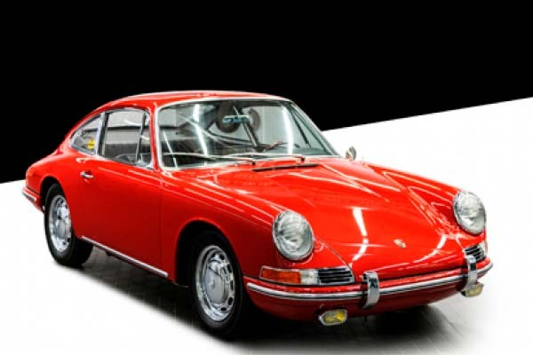
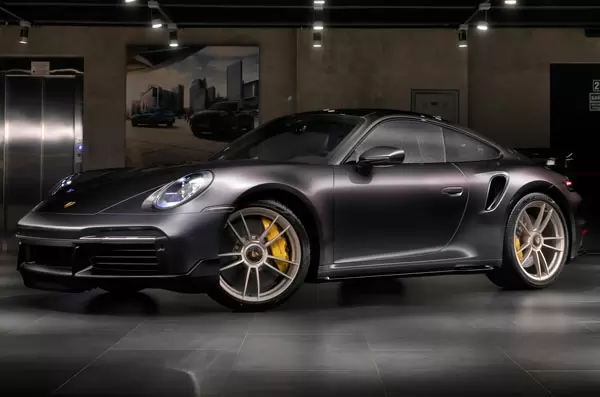
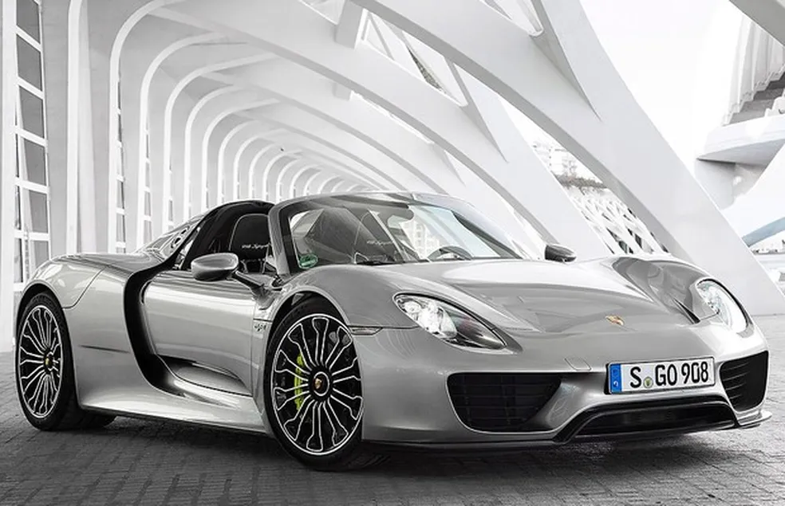
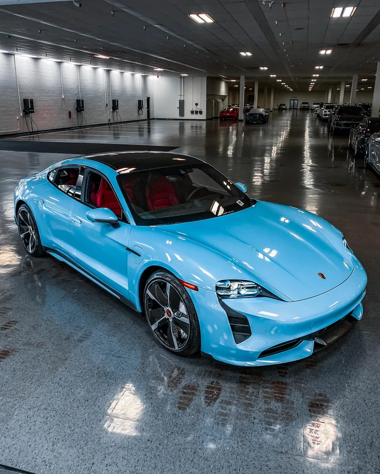

Porsche AG: A Precisão e a Tradição da Engenharia Alemã
Fundação: 1931 | Origem: Stuttgart, Alemanha
A história da Porsche é guiada pela busca inabalável por eficiência e performance utilizável no dia a dia. Fundada por Ferdinand Porsche e impulsionada por seu filho Ferdinand "Ferry" Porsche, a marca nasceu do desejo de criar o carro esportivo ideal: leve, aerodinâmico e de engenharia impecável.
1. O Início: O Primeiro Carro (356 "No. 1")
Lançado em 1948, o Porsche 356 foi o primeiro automóvel de produção a carregar o nome da família Porsche. Com estrutura leve e motor traseiro resfriado a ar, ele definiu as diretrizes de design e distribuição de peso que acompanhariam a marca pelas décadas seguintes.
Curiosidade Técnica: O Brasão de Stuttgart
O famoso escudo da Porsche combina o cavalo empinado (símbolo oficial da cidade de Stuttgart, que nasceu como um haras) com os chifres de veado e as faixas pretas e vermelhas do brasão do antigo estado de Württemberg-Baden.

Vídeo demonstrativo do Porsche 356(Réplica):
2. O Divisor de Águas: A Saga do Porsche 911
Apresentado em 1963, o Porsche 911 tornou-se o esportivo mais icônico da história do automobilismo. Sua arquitetura única, mantendo o motor Boxer de 6 cilindros traseiro, desafiou os padrões da física e criou uma assinatura de pilotagem inconfundível.
O Hiato Histórico: A Evolução da Refrigeração a Ar para Água
Por mais de 30 anos, o 911 manteve seus motores resfriados a ar (as lendárias gerações Air-Cooled). Foi somente na geração 996, em 1997, que a Porsche realizou a transição para a refrigeração líquida, garantindo maior eficiência térmica e permitindo que o modelo ultrapassasse os limites de potência na era moderna.


Curiosidade Histórica: Por que 911 e não 901?
O modelo foi originalmente batizado como Porsche 901. No entanto, a Peugeot reivindicou os direitos exclusivos do uso de números de três dígitos com zero no meio para automóveis na França. Para evitar disputas judiciais, a Porsche trocou o "0" pelo "1", criando a sigla lendária 911.
3. A Era Moderna: Dos Hipercarros ao Futuro Elétrico
No século XXI, a Porsche continuou na vanguarda da alta performance, combinando supercarros puristas com novas tecnologias de eletrificação.
3.1. A Linhagem Halo: Carrera GT e 918 Spyder
Lançado em 2003, o Porsche Carrera GT trouxe das pistas um motor V10 5.7L naturalmente aspirado de 612 cv, câmbio manual e chassi em fibra de carbono, tornando-se um dos ícones analógicos mais aclamados do mundo.
Uma década depois, em 2013, o Porsche 918 Spyder representou um salto tecnológico ao adotar um sistema híbrido avançado, combinando um V8 aspirado a dois motores elétricos para entregar 887 cv e tração integral.


Ouça o Motor V10 do Porsche Carrera GT (5.7L Aspirado):
3.2. Os Dias Atuais: A Revolução Elétrica com o Taycan
Apresentado em 2019, o Porsche Taycan estabeleceu um novo capítulo em Zuffenhausen ao tornar-se o primeiro modelo 100% elétrico de produção em série da fabricante.
Diferente dos esportivos tradicionais, o Taycan utiliza arquitetura elétrica de 800 volts e motores síncronos que entregam até **761 cv** no modo Overboost na versão Turbo S. Ele foi capaz de provar que é possível entregar aceleração instantânea e zero emissões mantendo a dinâmica de chassi característica da marca.

Curiosidade: O significado de "Taycan"
O nome Taycan vem do turco e pode ser traduzido como "alma de um jovem cavalo vigoroso", uma referência direta ao cavalo empinado que compõe o centro do brasão da marca desde 1952.